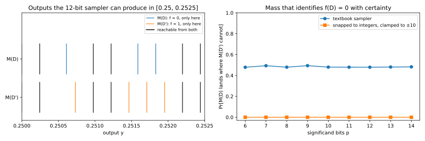

24 Discrete and floating-point-safe mechanisms
24.1 Why this matters
The proof of the Laplace mechanism compares two densities on the real line. Your computer has no real numbers. It has floating-point numbers, a finite set with uneven gaps, and a source of random bits, and the function that “samples \(\mathrm{Lap}(b)\)” produces some distribution on that finite set, about which the proof says nothing. Mironov (2012) showed that the textbook sampler, in double precision, leaks the true answer through the low-order bits of its output.
The one idea of this chapter is that differential privacy (DP) is a property of the output distribution the code actually produces, so the code must produce exactly the distribution the proof is about. There are two ways to get there. Keep floating point and repair the output, by rounding it to a coarse grid so that every output is reachable from every input. Or leave floating point behind: make the query integer-valued and sample integer noise exactly, with integer and rational arithmetic only. The second gives the discrete Laplace and discrete Gaussian mechanisms, whose samplers deliver exactly what their proofs assume.
24.2 Floating-point Laplace breaks differential privacy
Suppose some output can be produced from a dataset \(D\) but never from its neighbour \(D'\). Seeing that output tells an observer the data were \(D\), with certainty. The DP inequality \(\Pr[M(D) \in S] \le e^\varepsilon\Pr[M(D') \in S] + \delta\), applied to the set \(S\) of such outputs, has a right-hand side of \(e^\varepsilon \cdot 0 + \delta\), and the factor \(e^\varepsilon\) is useless however large it is. So the whole probability of those outputs must be paid for by \(\delta\): \[\delta \;\ge\; \Pr[M(D) \in S] \tag{24.1}\] for every \(\varepsilon\). Any output reachable from one input only rules out pure DP, and this support check is the quickest audit of an implementation.
The textbook sampler fails it. It draws \(U\) uniform on \((0, 1)\) and a random sign \(\xi\), and outputs \(f(D) + \xi\cdot b\ln(1/U)\), rounding the logarithm and the sum to the nearest float. Floats are dense near 0 and sparse far from it: between \(2^e\) and \(2^{e+1}\) they are evenly spaced, and the spacing doubles with each power of 2. With \(f(D) = 0\), an output near 0 is a noise value as it is, on the fine grid of floats near 0. With \(f(D') = 1\), the same output must come from \(1\) minus a noise value near 1, which lies on the coarser grid there. So most of the fine-grained outputs of \(M(D)\) near 0 cannot come from \(M(D')\), and away from the inputs the two sets of outputs only partly coincide.
Suppose a hospital releases a count with this sampler at \(b = 1\), which would be 1-DP in exact arithmetic, and an analyst who knows the count is 0 or 1 checks whether the released float can be produced from 1. In a toy model with 12-bit floats, small enough to enumerate exactly, \(\Pr[M(D) \in S] = 0.4791\): the check identifies the count 0 with certainty 47.91% of the time, where the proof promised odds moved by at most a factor \(e\) (Figure 24.1).

More precision does not help, because extra bits refine both grids together and the mismatch stays: from 6 to 14 bits, about 48% of the mass sits on outputs the other input can’t produce. Mironov found the same effect at the 53 bits of a double in several DP libraries, and Jin et al. (2022) found such leaks in later ones. The tails leak as well: a 53-bit uniform is never below \(2^{-53}\), so the noise never exceeds about \(36.74\,b\), and the outputs just beyond that bound from one input are unreachable from the other. So numpy.random.laplace, or any f + scale * log(u), is not a DP mechanism, whatever \(\varepsilon\) the code claims.
24.3 The snapping mechanism
The leak lives in which float the output is, not in where it lands on the real line, and that is the idea of Mironov’s snapping mechanism. Round the noisy answer to a grid at least as coarse as the noise scale, and the bits that depend on the input are discarded; every input now reaches the same finite set of grid points, and the support argument has nothing to bite on.
Why does rounding cost no privacy? Each grid point collects all the noise values that round to it, an interval of the real line. In exact arithmetic its probability under \(D\) and under \(D'\) is the probability that a Laplace variable lands in one of two intervals shifted by at most one unit, and the Laplace density changes by at most a factor \(e^{1/\lambda}\) under such a shift. Rounding exact noise is just post-processing. What remains is the floating-point error, which moves the interval endpoints slightly. That error is a fraction \(\eta = 2^{-53}\) of the numbers involved, so the mechanism clamps the input and the output to \([-B, B]\) to keep those numbers, and the error, bounded.
Concretely, for a query with sensitivity 1 and noise scale \(\lambda\), let \(\Lambda\) be the smallest power of 2 at or above \(\lambda\). Clamp \(f(D)\) to \([-B, B]\), add floating-point Laplace noise of scale \(\lambda\), round to the nearest multiple of \(\Lambda\), and clamp again. For \(\lambda < B < 2^{46}\lambda\) the result is \(\varepsilon\)-DP with \[\varepsilon = \frac{1 + 12B\eta}{\lambda} + \frac{2^{-49}B}{\lambda}, \qquad \eta = 2^{-53}: \tag{24.2}\] the exact mechanism’s \(1/\lambda\) plus two terms that pay for the floating-point error and grow with the clamping range. For \(\lambda = 1\) and \(B = 10\) the excess is about \(3.1\times10^{-14}\). In the toy, snapping to integers and clamping to \([-10, 10]\) makes both inputs reach the same 21 outputs at every precision, and the largest privacy loss is 1.0010 at 12 bits and 1.0002 at 14, against 1 for the exact mechanism.
The costs follow from the construction. Rounding adds up to \(\Lambda/2 \le \lambda\) of error, and clamping biases answers near \(\pm B\), so choose \(B\) from the domain, knowing that \(\varepsilon\) grows with it. And because snapping post-processes a mechanism that is not DP, its proof rests on Mironov’s bookkeeping and on an ideal uniform and a correct logarithm: use a vetted implementation, not your own variant.
24.4 The discrete Laplace mechanism
Most DP queries are counts and histograms, integer-valued with sensitivity 1, and for them the natural noise is integer-valued too: the output has no low-order bits to leak, and the noise can be sampled exactly. Take the Laplace density, keep its values at the integers and renormalize: that is the discrete Laplace distribution \(\mathrm{Lap}_{\mathbb Z}(b)\), and adding it is the geometric mechanism of Ghosh, Roughgarden and Sundararajan (2009). Each step away from 0 multiplies the probability by \(r = e^{-1/b}\), as the continuous density drops by \(e^{-1/b}\) per unit, so its probability mass function (PMF) is \[\Pr[Z = z] = \frac{1 - r}{1 + r}\,r^{|z|}, \qquad z \in \mathbb Z, \qquad r = e^{-1/b}. \tag{24.3}\] The privacy guarantee is the continuous one. Shifting the input by one unit changes each output’s probability by at most the factor \(e^{1/b}\), and shifting by an integer only relabels the terms of the normalizing sum, so it doesn’t change the normalizer. For an integer-valued query with \(\ell_1\) sensitivity \(\Delta_1 f\), adding independent \(\mathrm{Lap}_{\mathbb Z}(b)\) noise to each coordinate is \(\varepsilon\)-DP with \(\varepsilon = \Delta_1 f/b\), the same calibration as before.
A count at \(\varepsilon = 1\) has \(b = 1\) and \(r = e^{-1} = 0.3679\). The exact count comes out with probability 0.4621, and the noise variance is 1.8413, slightly below the 2 of continuous \(\mathrm{Lap}(1)\): same guarantee, a little less noise. For a single count nothing does better: every user, whatever their loss function and prior, can post-process the geometric mechanism’s output to do as well as with any other \(\varepsilon\)-DP mechanism.
The query must be integer-valued, since a non-integer shift moves the noise off the lattice and brings back the support problem. Rounding \(f(D) + \mathrm{Lap}(b)\) to an integer is no substitute: it would be private in exact arithmetic, but it needs the floating-point sampler of Section 24.2.
24.5 The discrete Gaussian mechanism
The Gaussian mechanism is the workhorse for dense vectors, because its noise follows the \(\ell_2\) sensitivity (The Laplace and Gaussian mechanisms). Canonne, Kamath and Steinke (2020) define its integer analogue the same way: the discrete Gaussian \(\mathcal N_{\mathbb Z}(0, \sigma^2)\) gives each integer \(x\) probability proportional to \(e^{-x^2/(2\sigma^2)}\). The US Census Bureau used it for the 2020 Census, and it is the noise of choice before secure aggregation, which works with integers.
The discrete Laplace argument carries over. Integer shifts leave the normalizer unchanged, so the log-ratio of two shifted PMFs is the log-ratio of the two bell curves: the privacy loss is the continuous Gaussian’s, linear in the output, evaluated at integers. The outputs whose loss exceeds \(\varepsilon\) therefore form a tail, and for a query whose value differs by \(\Delta\) between neighbours the smallest \(\delta\) at each \(\varepsilon\) has the same form as the continuous Gaussian’s analytic curve, with discrete tails in place of continuous ones: \[\delta(\varepsilon) = \Pr\Big[X > \frac{\varepsilon\sigma^2}{\Delta} - \frac\Delta2\Big] - e^\varepsilon\Pr\Big[X > \frac{\varepsilon\sigma^2}{\Delta} + \frac\Delta2\Big], \qquad X \sim \mathcal N_{\mathbb Z}(0, \sigma^2). \tag{24.4}\] The first term is the probability of the outputs that favour \(D\) by more than \(e^\varepsilon\); the second subtracts the part of it that the factor \(e^\varepsilon\) already covers.
Same form does not mean same value. The privacy loss now takes only lattice values, one per integer output, so as \(\varepsilon\) crosses one of them a whole output enters or leaves the sum, and the discrete curve has a kink there and oscillates around the continuous one (Figure 24.2). For sensitivity 1 at \(\varepsilon = 1\), it gives \(\delta = 0.6032\) against 0.5099 for the continuous Gaussian at \(\sigma = 0.5\), 0.1414 against 0.1269 at \(\sigma = 1\), and 0.0072 against 0.0068 at \(\sigma = 2\); at other \(\varepsilon\), such as just past a kink, the discrete curve is below, so neither dominates. So don’t reuse the continuous formula to report the discrete Gaussian’s \(\delta\): it can understate it, and more so for small \(\sigma\). Compute Equation 24.4 directly, as Section 24.7 does. In Rényi divergence, which Rényi differential privacy uses for composition, the discrete Gaussian is never worse than the continuous one, so Gaussian accountants apply unchanged.

Restricting the bell curve to integers also pulls a little mass towards 0, so the variance is below \(\sigma^2\), by a relative \(2.11\times10^{-7}\) at \(\sigma = 1\) but down to \(0.8601\,\sigma^2\) at \(\sigma = 0.5\).
Two consequences matter in machine learning. A real-valued query, such as a clipped gradient, must be scaled by \(1/\gamma\) for a small step \(\gamma\) and rounded to integers first. Randomized rounding (up with probability equal to the fractional part) keeps it unbiased, but the rounded query can have a slightly larger sensitivity, and that is the one to calibrate to. And unlike continuous Gaussians, a sum of discrete Gaussians is not exactly a discrete Gaussian; for \(\sigma \ge 1\) it is very close, which schemes where each client adds a share of the noise rely on.
24.6 Sampling exactly, and choosing a library
Inverting a cumulative distribution function (CDF) needs the discrete Gaussian’s normalizer, which is irrational, and a floating-point uniform, which brings back every problem of Section 24.2. Canonne, Kamath and Steinke (2020) avoid both with samplers that use only integer and rational arithmetic and uniform random integers.
The building block is a coin that comes up 1 with probability \(e^{-\gamma}\), made from coins with rational probabilities. Flip coins with probabilities \(\gamma, \gamma/2, \gamma/3, \dots\) until one fails: the chance of surviving \(k\) flips is \(\gamma^k/k!\), a term of the power series of \(e^{-\gamma}\), and reporting whether the first failure came at an odd step adds those terms with alternating signs, giving exactly \(e^{-\gamma}\). Such coins yield an exact discrete Laplace sampler. The discrete Gaussian then comes by rejection: the discrete Laplace has heavier tails, so it can serve as a proposal, and each draw is kept with a probability, decided by one exact coin, chosen so that proposal times acceptance is proportional to the Gaussian weights. Rejection never needs the normalizer.
They are cheap. A discrete Laplace draw takes about 10 to 12 uniform integers. A discrete Gaussian draw is accepted with probability 0.5185 at \(\sigma^2 = \frac14\) and 0.7532 at \(\sigma^2 = 100\), so it takes fewer than two proposals on average. A histogram of 1,000 bins with \(\mathcal N_{\mathbb Z}(0, 100)\) noise per bin uses about 15.6 uniform integers per bin, about 15,600 in all, and no floating-point operation.
Exactness is not timing safety. The number of rejection rounds depends on the output, so the running time leaks information about the noise, and Jin et al. (2022) show such leaks are exploitable. So a review of a library or pipeline asks four questions. Is the noise drawn by an exact integer sampler or a snapping-style repair, with no floating-point exp, log or random() inside the sampler? Do the random bits come from a cryptographic source (in Python, secrets.SystemRandom()), not a seeded generator? Is the running time padded or fixed? And does the reported calibration match the mechanism used: the discrete Gaussian’s own \(\delta(\varepsilon)\), the rounded query’s sensitivity, the clamping range?
24.7 Code
Take the noise itself from a vetted library. What you can check yourself is the calibration: that the \(\delta\) reported for a discrete Gaussian matches Equation 24.4. The snippet sums the PMF over the integers and compares it with the continuous Gaussian’s exact curve.
from math import ceil, erfc, exp, sqrt
def discrete_gaussian_delta(eps: float, sigma: float, sens: int = 1) -> float:
"""Exact delta(eps) of the discrete Gaussian mechanism, summed over the integers."""
reach = ceil(40 * sigma) + sens # the mass beyond 40 sigma is far below double precision
weight = {y: exp(-y * y / (2 * sigma**2)) for y in range(-reach - sens, reach + 1)}
total = sum(weight[y] for y in range(-reach, reach + 1))
delta = 0.0
for y in range(-reach, reach + 1): # outputs of f(D) = 0 and f(D') = sens
p, q = weight[y] / total, weight[y - sens] / total
delta += max(p - exp(eps) * q, 0.0)
return delta
def normal_cdf(x: float) -> float:
return 0.5 * erfc(-x / sqrt(2))
def gaussian_delta(eps: float, sigma: float, sens: float = 1.0) -> float:
"""Exact delta(eps) of the continuous Gaussian mechanism, for comparison."""
mu = sens / sigma
return normal_cdf(mu / 2 - eps / mu) - exp(eps) * normal_cdf(-mu / 2 - eps / mu)
print(f"{discrete_gaussian_delta(1.0, 0.5):.4f} {gaussian_delta(1.0, 0.5):.4f}") # 0.6032 0.5099
print(f"{discrete_gaussian_delta(1.0, 1.0):.4f} {gaussian_delta(1.0, 1.0):.4f}") # 0.1414 0.1269
print(f"{discrete_gaussian_delta(1.0, 2.0):.4f} {gaussian_delta(1.0, 2.0):.4f}") # 0.0072 0.0068Floating point is fine here: this computes a guarantee, not a release. The full edition’s script implements the exact samplers with fractions.Fraction and integers, checks each against its exact distribution, and enumerates the toy floating-point sampler:
uv run python code/part03-dp-foundations/discrete_mechanisms.py24.8 Cheat sheet
| Result | Formula | Notes |
|---|---|---|
| Support argument | \(\delta \ge \Pr[M(D) \in S]\), \(S\) = outputs reachable from \(D\) only | Any such output rules out pure DP; the quickest audit |
| Floating-point Laplace | \(f(D) + \xi\,b\ln(1/U)\), rounded | Not DP: about 48% of the mass identifies the input in the toy, at every precision |
| Snapping | Clamp, add noise, round to \(\Lambda \ge \lambda\), clamp | \(\varepsilon = \frac{1 + 12B\eta}{\lambda} + \frac{2^{-49}B}{\lambda}\) for sensitivity 1 |
| Discrete Laplace | \(\frac{1 - r}{1 + r}r^{\lvert z\rvert}\), \(r = e^{-1/b}\) | \(\varepsilon = \Delta_1 f/b\); variance \(\frac{2r}{(1 - r)^2}\), just below \(2b^2\) |
| Discrete Gaussian | \(\propto e^{-x^2/(2\sigma^2)}\) on the integers | \(\delta(\varepsilon)\) by Equation 24.4; same Rényi bound as the continuous Gaussian |
| Exact samplers | Integers, rationals, uniform integers | Fewer than two proposals per discrete Gaussian draw; pad the running time |
Rules of thumb
- Never ship
f(D) + laplace(b)in floating point. Snap and clamp, or make the query integer-valued and use an exact integer sampler. - Always compute the discrete Gaussian’s \(\delta(\varepsilon)\) with Equation 24.4; the continuous formula can understate it.
- An exact distribution is not enough: running time that depends on the output is a separate side channel.
24.9 Further reading
- Mironov, “On Significance of the Least Significant Bits for Differential Privacy” (CCS 2012): the floating-point attack and the snapping mechanism.
- Canonne, Kamath & Steinke, “The Discrete Gaussian for Differential Privacy” (NeurIPS 2020): the discrete Gaussian’s guarantees and the exact samplers; the reference implementation to compare a library against.
- Jin, McMurtry, Rubinstein & Ohrimenko, “Are We There Yet? Timing and Floating-Point Attacks on Differential Privacy Systems” (IEEE S&P 2022): what still goes wrong in modern libraries, including timing.
- Kairouz, Liu & Steinke, “The Distributed Discrete Gaussian Mechanism for Federated Learning with Secure Aggregation” (ICML 2021): the discrete Gaussian when each client adds its own noise.
Derivations. Every result in this chapter is derived step by step in the full edition’s chapter.